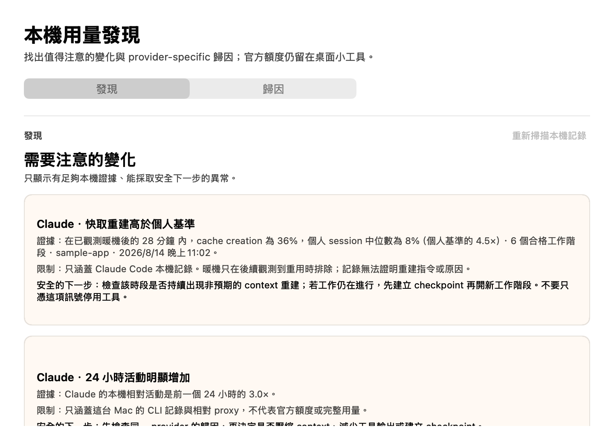
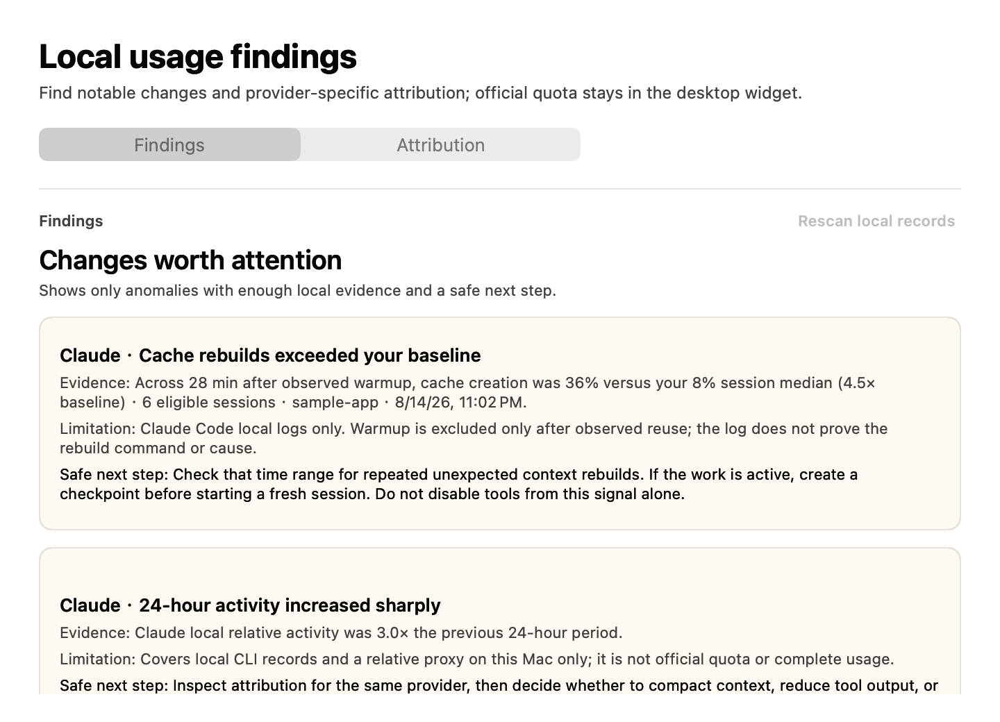
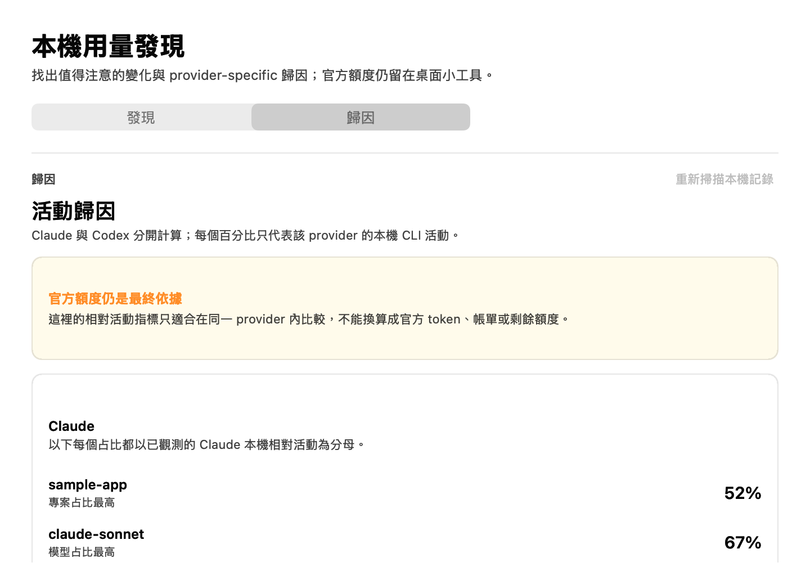
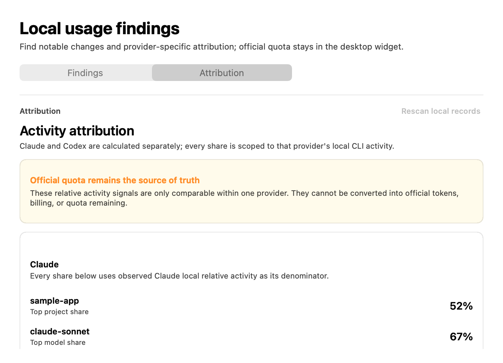

先知道還剩多少Know what remains
Claude 與 Codex 各視窗都使用同一語意：大數字與進度軌代表剩餘，不把「無限制」畫成錯誤。Every Claude and Codex window uses one meaning: the number and track show what remains, and no-limit plans never look like failures.
macOS native · free · apple silicon
把 Claude 與 Codex 的剩餘額度、重置時間，以及有證據的本機異常與歸因，放在安靜的 macOS 原生工具裡。 Keep remaining Claude and Codex quota, reset timing, and evidence-backed local findings in one quiet native macOS utility.


真實產品畫面The real product
桌面卡只保留剩餘量、倒數與新鮮度；Findings 只提出有足夠證據的異常，Attribution 再把 Claude 與 Codex 分開解釋。 The desktop glance stays focused on remaining quota, countdowns, and freshness. Findings surface only evidence-backed anomalies; Attribution explains Claude and Codex separately.


所有畫面均由正式 DetailWindowController 與固定合成 report 產生。 Every screen is rendered by the production DetailWindowController with a fixed synthetic report.
Claude 與 Codex 各視窗都使用同一語意：大數字與進度軌代表剩餘，不把「無限制」畫成錯誤。Every Claude and Codex window uses one meaning: the number and track show what remains, and no-limit plans never look like failures.
24 小時變化、重工作階段、快取重建、subagent 與工具結果只有在證據門檻成立時才出現，並附限制與安全下一步。24-hour changes, heavy sessions, cache rebuilds, subagents, and tool results appear only when evidence thresholds are met—with limitations and a safe next step.
Claude 與 Codex 的專案、模型與工作階段分開計算；Codex 沒有同等工具或 subagent 欄位時保持 unavailable，不補成 0%。Claude and Codex project, model, and session shares stay separate. Missing Codex tool or subagent fields remain unavailable instead of becoming 0%.
如何運作How it works
官方額度與本機活動分析是兩條分開的資料路徑，不把 token、cookie 或 organization ID 交給分析引擎。Official quota and local activity analysis use separate data paths. Tokens, cookies, and organization IDs never go to the analysis engine.
Swift bridge 使用既有 Claude Desktop／Codex 登入，只把通過 schema 驗證的百分比與時間交給 UI。The Swift bridge uses existing Claude Desktop and Codex sign-ins, passing only schema-validated percentages and timing to the UI.
分析只讀 Claude Code 與 Codex CLI 記錄；Desktop 與 Web 用量不包含在結果裡。Analysis reads Claude Code and Codex CLI records only. Desktop and web usage are excluded from the result.
Live、Cached、Stale、Unavailable 與資料年齡都有文字；服務自己的頁面始終是最終依據。Live, Cached, Stale, Unavailable, and data age are always textual. Provider pages remain authoritative.
隱私與信任Privacy and trust
Live 額度仍會連到 Claude／OpenAI 自己的 usage endpoint，因此這不是「完全離線」；安全邊界在於登入材料不離開 native bridge。Live quota still connects to Claude and OpenAI usage endpoints, so this is not fully offline. The security boundary is that login material never leaves the native bridge.
Claude Keychain 存取可以獨立停用；Codex、Widget 與開機啟動控制仍可使用。Claude Keychain access can be disabled independently while Codex, the Widget, and login-item controls keep working.
安裝Install
兩個安裝檔都是 0.2.0 arm64，內含經審查的 Node runtime；你的 Mac 不需要先裝 Node 或 Xcode。Both 0.2.0 arm64 installers carry the reviewed Node runtime. Your Mac does not need Node or Xcode first.
適合想自己決定何時啟用開機啟動與安裝 Agent Skill 的使用者。Best when you want to choose when to enable launch at login and install the Agent Skill.
安裝 App，並設定開機啟動與 Agent Skill；所有內容仍可完整移除。Installs the app, configures launch at login, and adds the Agent Skill. Everything remains fully removable.
目前只出貨 Free 已完成能力。不承諾日期，也不在 App 裡放鎖頭卡或用假資料冒充未完成的預測、告警或成本功能。研究表單會建立公開 GitHub issue；請只描述匿名化工作流，不要貼 log、專案／客戶名稱、截圖、憑證或個人資料。Only completed Free capabilities ship today. There is no promised date, and the app does not use lock cards or fake data to imply unfinished forecasts, alerts, or cost features. The research form creates a public GitHub issue; share only an anonymized workflow—no logs, project or customer names, screenshots, credentials, or personal data.
FAQ
不是。這是非官方 best-effort 整合；端點、登入或服務調整都可能讓讀取失敗或與服務頁面不同，請以服務自己的頁面為準。No. It is an unofficial, best-effort integration. Endpoint, login, or service changes can cause failures or differences; provider pages are authoritative.
不代表。Live 只表示最近一次對該服務 endpoint 的請求成功；Cached 與 Stale 會顯示資料年齡，Unavailable 會說明缺少登入、權限或服務錯誤。No. Live only means the latest request to that service endpoint succeeded. Cached and Stale show age; Unavailable explains missing sign-in, permission, or service failure.
Claude live 額度需要使用 Claude Desktop 的現有 session。「允許」只授權一次；「永遠允許」避免每分鐘刷新重複詢問。也可以獨立停用 Claude Keychain 存取。Claude live quota uses the existing Claude Desktop session. Allow grants one access; Always Allow avoids repeat prompts during minute refreshes. Claude Keychain access can also be disabled independently.
在 Widget 右鍵選單停用開機啟動並結束，移除 Applications 裡的 App，再移除本機 skill 與非敏感快取。PKG 安裝也可忘記 receipt。Disable launch at login and quit from the Widget menu, remove the app from Applications, then remove the local skill and non-sensitive cache. A PKG receipt can also be forgotten.